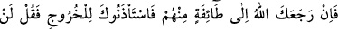
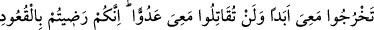
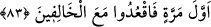

1. Sevinçten ağlamak.
2. Hüzünden ağlamak.
3. Merhametten ağlamak.
4. Meydana gelecek olan bir şeyden korkarak için ağlamak.
5. Yalandan ağlamak. Ölüye ağlamayı âdet edinen ağıtçı kadının ağlaması gibi. Çünkü
böyle kadınlar başkalarını ağlamaya teşvik ve tahrik etmek için (yalandan) ağlarlar.
Eserde şöyle varid olmuştur: “Başkalarını ağlatmak için yalandan ağlayan kadın,
kıyamet gününde kabrinden saçı başı karışık, toz toprak içinde, üzerinde lânet
elbisesi ve ayıp zırhı olduğu halde elini başına koymuş, “Vah başıma gelenler, vah!”
diyerek ve köpek gibi havlayarak çıkar.”[225]
6. Muvâfakat ağlaması. Bir grubu ağlarken görmek ve onların ağlama sebebini
bilmeksizin onların arasına katılarak ağlamak.
7. Sevinçten ve hasretten ötürü ağlamak.
8. Tahammül edilemeyecek bir acıdan dolayı ağlamak.
9. Haksızlık ve zayıflık dolayısıyla ağlamak.
10. Nifak ağlaması. Bu, kalp kaskatı olduğu halde gözün yaş akıtması şeklinde olur.
Ağlıyor gibi görünmeye gelince bu, insanın kendini ağlamak için zorlamasıdır.
Ağlıyor gibi görünmenin, övülen ve kötülenen olmak üzere iki türü vardır. Övülen türü,
kalp yumuşaklığı elde etmek için yapılandır. Kötülenen türü ise gösteriş için ve
başkaları duysunlar diye ağlıyormuş gibi davranmaktır.
Hâsılı âhireti isteyen kişinin az gülüp çok ağlaması gerekir. Ölümden ve hesaba
çekileceğinden gafil olmamalıdır. Çünkü nice gülen insan var ki kefeni, kumaşları
beyaza boyayan kimsenin elinde hazırdır.
Hâfız der ki:
Hâfız, o salınarak giden kekliğin kahkahasını gördü
Halbuki kaza şahininin pençesinden gâfil idi
83. “Eğer Allah, seni onlardan bir topluluğun yanına döndürür de (onlar savaşa)
çıkmak için senden izin isterlerse, de ki: “Aslâ benimle çıkmayacaksınız, benimle
beraber düşmanla savaşmayacaksınız. Siz ilk seferde oturmağa râzı olmuştunuz,
öyle ise geri kalanlarla beraber oturun.”
“Eğer Allah, seni” Tebük gazvesinden “onlardan bir topluluğun yanına döndürür